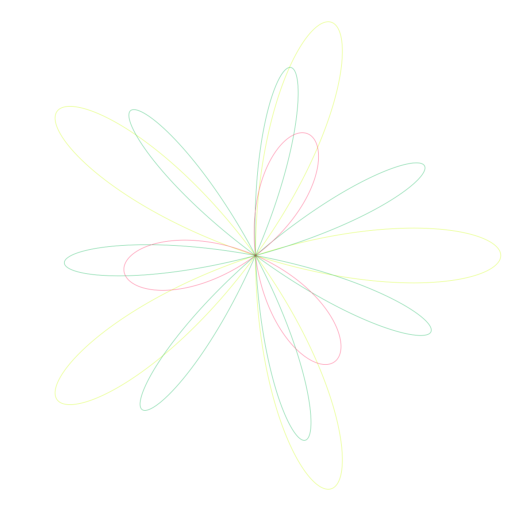
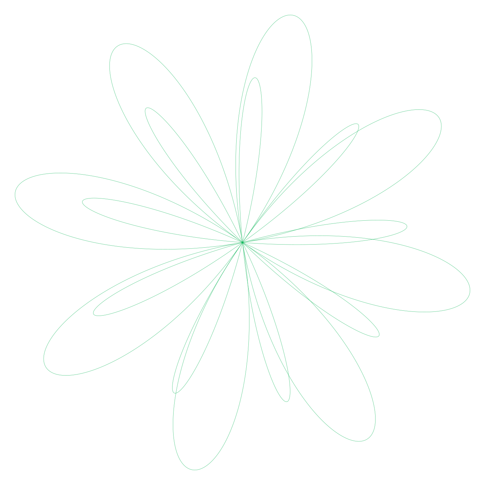
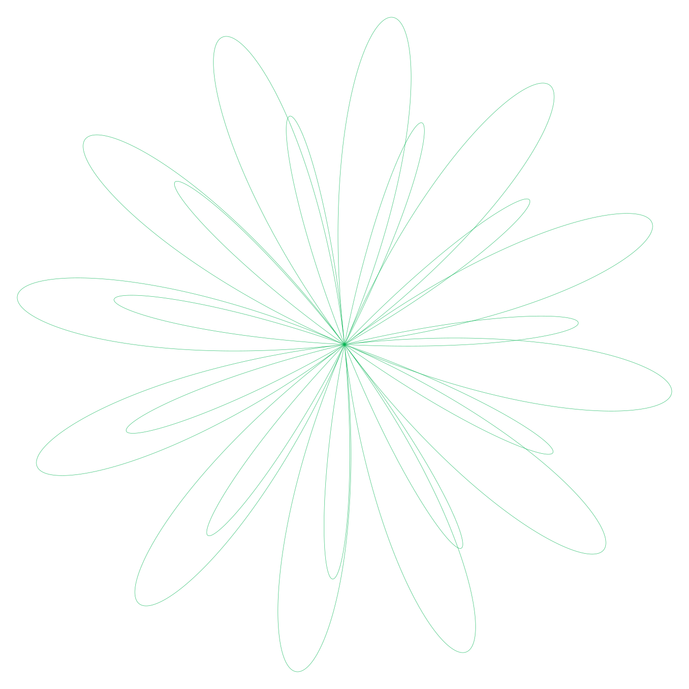
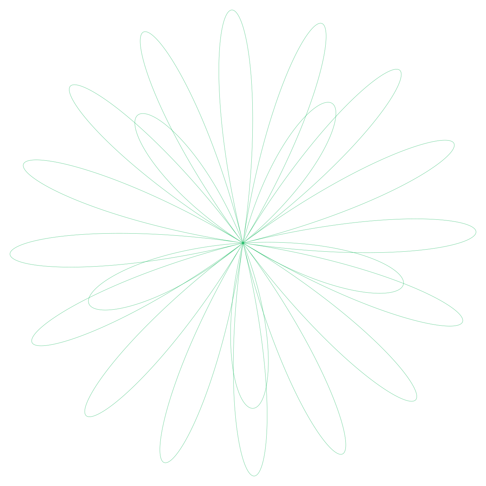

Fabrication is the part everyone photographs. Cleanrooms, lithography, a wafer held up to a light. It is also the part that has stopped differentiating anyone, because four companies can do it and three of them buy their machines from the same Dutch supplier.
The margin no longer sits in the making. It sits in the permissions. A modern accelerator ships with capability physically present and administratively withheld, and the price of the product is set by how much of itself the buyer is allowed to use.
This is not a claim that requires trust. The evidence is purchasable. When the cryptocurrency market collapsed it stranded a very large number of processors whose only purpose had been to be deliberately worse than their own silicon, and those processors are now cheap enough to buy and examine.
What follows is a reading of one such processor. It was chosen because it is the least subtle example available, and because anyone who doubts the reading can buy the evidence and check.

Ethereum stopped using proof of work. The network no longer needed anyone to solve anything, and the entire global apparatus assembled to solve it became, within a single day, an inventory problem.
Gaming cards had somewhere to go. They went back to the shelves they had been scalped from, and prices fell, and the world moved on. The purpose-built mining hardware had nowhere. It had no display outputs, no market outside the one that had just closed, and a manufacturer with no incentive to help it find another.
It had launched at roughly $4,299. It now moves on the secondary market between $400 and $800, and the only reason it recovered that far is that a different industry worked out what was underneath it. NVIDIA has never published a production figure, so the size of the stranded inventory is inferred from liquidation volume rather than known.
The card had been sold at a premium on the explicit promise that it could do one thing well and nothing else at all. When the one thing ended, the promise held.
The processor inside the mining card is GA100. It is the processor inside the A100, which is the accelerator that trained most of what the public now calls artificial intelligence.
GA100 is 826 square millimetres of seven nanometre silicon carrying 54.2 billion transistors. Eight graphics processing clusters. Up to 128 streaming multiprocessors, 8,192 single precision cores and 512 third generation tensor cores, feeding a 40 megabyte level two cache.
It cannot draw anything. There are no ray tracing units and no display engine, because nothing it was designed for involves a screen. It multiplies matrices, which is the only operation deep learning performs in quantity, and it does so against stacked high bandwidth memory sitting on the same interposer rather than scattered across a board.
The mining card carries the GA100-105F-A1 bin. Seventy of the 128 streaming multiprocessors are active, giving 4,480 single precision cores and 280 tensor cores, clocked at 1140 base and 1410 boost against a 4,096-bit memory interface. That is a harvested die. Nothing about it is remarkable yet.
Two products. One design. The distance between them is not manufacturing. It is configuration, and configuration is written after the wafer is finished.

The restrictions fall into three categories, and the categories matter more than the numbers, because each one is enforced by a different mechanism with a different degree of permanence.
Memory geometry. The firmware reports a smaller pool than the package physically carries. The system believes the card, because the system has no independent way to count.
Compute throughput. Tensor and floating point paths are throttled to a level that would have been unremarkable on a desktop processor a decade earlier. The units are present. They are not permitted to run.
Host bandwidth. The connection to the motherboard is held at an early generation and a quarter of the standard lane width. This one is elegant, because a training workload that cannot be fed is useless regardless of what the cores are allowed to do.
The figures. Memory reports 8 gigabytes across a 4,096-bit bus sustaining 1.49 terabytes per second. Four active stacks of HBM2e, and HBM2e does not come in two gigabyte stacks. The arithmetic is available to anyone who wants to do it.
Compute is the clearer cut. The hardware specifies 12.63 teraflops of single precision. The card delivers a reported 0.39. The cores are present, clocked and counted. They are simply not permitted to run.
Host bandwidth sits at PCIe 1.0 by four lanes, against a slot rated for 4.0 by sixteen.
Three mechanisms hold the cuts in place. The VBIOS is signed. The enterprise driver refuses the card outright. The third is reported to be one time programmable fuses burned at manufacture, and if that report is correct then the limits are not reversible in software at all, only worked around. This edition names that third mechanism as reported rather than established, because the difference between a fuse and a firmware rule is the difference between a permanent decision and a revocable one.
A lock burned into the die at manufacture and a lock written in firmware are the same lock to a customer and entirely different locks to an engineer.
An 826 square millimetre die is enormous, and at that size perfect yield is not a target anyone holds. A speck of dust lands on a wafer, a few cores die, and the industry response is sensible: disable the broken region and sell the chip as a lesser part. This is binning. It is honest, it is efficient, and it is the reason large processors are economically possible at all.
Binning explains seventy active multiprocessors out of one hundred and twenty eight. It does not explain a working memory controller reporting a quarter of what it addresses. It does not explain a functional interconnect held three generations back at a quarter of its lanes. Nothing about a lithography defect selects a PCIe generation.
The distinction is the whole argument. One set of limits describes damage. The other describes a decision, and the decision cost money to implement, which means someone calculated that it would earn more than it cost.
Ask whether the silicon under the limit still works. If it does, the limit was never damage. It was a price, and burning it into a fuse makes it a permanent one rather than an honest one.

IBM shipped mainframes with processors already installed and dormant, activated by a licence key when the customer's workload grew. The metal arrived on day one. The permission arrived when the invoice cleared. The industry called it Capacity on Demand and the customers accepted it, because the alternative was a second delivery truck and a planned outage.
Intel sold a consumer processor in 2011 with cache and threading disabled, and a card in the retail box that unlocked them for roughly fifty dollars. The programme lasted about a year. It was withdrawn not because it failed technically but because buying a scratch card to finish a product you already owned turned out to be intolerable when stated that plainly.
Tesla shipped battery packs that were physically larger than the capacity the car would use, unlockable later for a fee. Some manufacturers have tried the same arrangement with seat heaters, which is the version that made newspapers, because a heating element is easy to picture and a memory controller is not.
The mining card belongs to this lineage. What distinguishes it is the absence of the upgrade path. IBM would sell you the key. Intel would sell you the key. Here there was never a key, because the entire point was that this customer must never become that customer.
Every precedent above offered a way to pay for the rest of the machine. This one offered nothing, which is what makes it the purest specimen of the practice rather than the worst.
Cards this cheap attract a particular kind of attention. Once the price fell below the cost of caring whether it survived, a community formed around the question of how much of the original processor was still reachable.
What that community has recovered is contested. Claims range from restored host bandwidth to substantially enlarged memory pools, and they arrive mostly as forum reports rather than reproducible method, with an unknown number of dead cards behind them going unposted. This edition does not adjudicate those claims, and anyone who tells you the result is settled is selling something.
The attempt is the finding. People do not spend months attacking firmware to reach hardware that is not there. The effort is evidence about what the package contains, independent of whether any given attempt succeeded.
This edition does not publish a procedure. The interesting finding is not how to perform the modification. It is what the modification proves about where the value in the original product was located.
In the United States the governing provision is section 1201 of the Digital Millennium Copyright Act. In Canada it is the technological protection measure provisions added to the Copyright Act by the Copyright Modernization Act. Both carry repair related exemptions, both have widened, and neither settles whether an accelerator you already own sits inside them.
This edition describes the locks. It does not open them.
| GA100 FULL DIE | A100 40GB PCIe | A100 80GB PCIe | CMP 170HX STOCK | CMP 170HX MODIFIED | |
|---|---|---|---|---|---|
| Process | TSMC N7 | TSMC N7 | TSMC N7 | TSMC N7 | TSMC N7 |
| Die area | 826 mm² | 826 mm² | 826 mm² | 826 mm² | 826 mm² |
| Transistors | 54.2 B | 54.2 B | 54.2 B | 54.2 B | 54.2 B |
| Die bin | GA100 full | GA100 | GA100 | GA100-105F-A1 | GA100-105F-A1 |
| GPCs | 8 | 7 | 7 | 7 | 7 |
| Streaming multiprocessors | 128 | 108 | 108 | 70 | 70 |
| FP32 cores | 8,192 | 6,912 | 6,912 | 4,480 | 4,480 |
| Tensor cores (3rd gen) | 512 | 432 | 432 | 280 | 280 |
| L2 cache | 48 MB | 40 MB | 40 MB | check | check |
| Base / boost clock | n/a | 1065 / 1410 | 1065 / 1410 | 1140 / 1410 | 1140 / 1410 |
| Memory type | HBM2e | HBM2 | HBM2e | HBM2e | HBM2e |
| Memory bus | 6,144-bit | 5,120-bit | 5,120-bit | 4,096-bit | 4,096-bit |
| Memory reported | n/a | 40 GB | 80 GB | 8 GB | unverified |
| Memory physical | n/a | 40 GB | 80 GB | ≥32 GB (4 stacks) | ≥32 GB |
| Bandwidth | n/a | 1.56 TB/s | 1.94 to 2.04 TB/s | 1.49 TB/s | 1.49 TB/s |
| FP32 theoretical | ~20.9 TF | 19.5 TF | 19.5 TF | 12.63 TF | 12.63 TF |
| FP32 delivered | n/a | 19.5 TF | 19.5 TF | 0.39 TF | unverified |
| Host interface | PCIe 4.0 x16 | PCIe 4.0 x16 | PCIe 4.0 x16 | PCIe 1.0 x4 | unverified |
| Display output | none | none | none | none | none |
| Board power | n/a | 250 W | 300 W | 250 W | unverified |
| Price at launch | n/a | ~$10,000 est | ~$15,000 est | $4,299 | n/a |
| Price today | n/a | n/a | n/a | $400 to $800 | $400 to $800 |
The mining card is not a scandal. It is a specimen, and it is valuable precisely because the company that made it had no reason to be subtle. There was no consumer to reassure and no reviewer to satisfy. The segmentation could be implemented openly, which means it can now be read openly.
What it records is a transition that has already happened everywhere else and is simply easier to see here. The physical object arrives complete. The commercial object is assembled afterwards, in firmware, out of decisions about what the buyer has paid to be allowed to do.
Every generation since has extended the practice rather than retreated from it. The locks have moved further down, from driver into firmware into fuses burned at manufacture, which is the direction you move a lock when you have decided that the previous one was too easy to reach.
That capability and permission are now separately priced, and only one of them ships in the box.